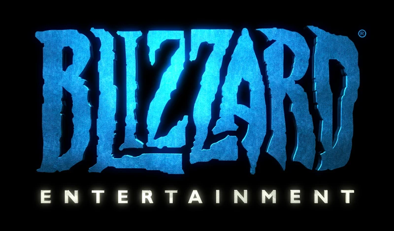
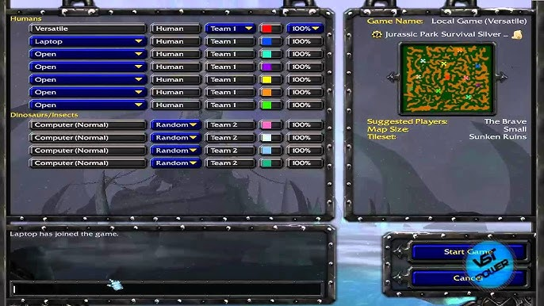

Que es Warcraft III?
Warcraft III: Reign of Chaos es un videojuego de estrategia en tiempo real creado por Blizzard Entertainment y es la tercera parte de la serie Warcraft. Además de continuar la historia del mundo épico medieval de Warcraft se distingue de sus predecesores por incorporar dos importantes cambios: el paso a los gráficos 3D y la aparición de dos nuevas razas.
su primer lanzamiento fue el 3 de julio de 2002 en estados unidos. luego, el 5 de julio del mismo año (2002) se estrenó en y en japón.
En que consiste??
El juego consiste básicamente en administrar los recursos disponibles (oro, madera y alimento) para producir unidades militares y desarrollar un ejército que dirigir en contra de los oponentes hasta destruir todos sus edificios. El juego provee varias estrategias de ataque o defensa, y se ejecutan las tácticas de combate y producción a partir de cuatro diferentes tipos de civilizaciones, llamadas «razas», que protagonizan el juego: humanos, orcos, elfos nocturnos y muertos vivientes. Cada una de estas razas es comandada a su vez por tres clases de héroes que encabezan y apoyan significativamente las batallas ante sus adversarios. Uno de los elementos innovadores del juego son estas unidades tipo héroe, capaces de crecer considerablemente en poder y tomar ítems distribuidos en los escenarios. El CD del juego también se incluye un editor de mapas que permite crear nuevos mapas, unidades, estilos de juego, etc. La herramienta permite la creación de mapas ilimitados permitiendo a los jugadores modificar cada aspecto manipulado por los propios diseñadores de Warcraft III. En julio de 2003 Blizzard sacó a la venta la expansión Warcraft III: The Frozen Throne, que continúa la historia e introduce nuevos tipos de unidades y estrategias.
Su Desarrolladora
blizzard entreteiment inc. es una empresa desarrolladora y distribuidora de videojuegos estadounidense con sede en Irvine, California, propiedad de Activision Blizzard y fundada el 1 de febrero de 1994. Conocida y fundada originalmente como Silicon & Synapse en 1991, la empresa comenzó realizando portabilidades de juegos para otros estudios antes de desarrollar sus propios videojuegos en 1993, entre los que destacaron Rock N' Roll Racing y The Lost Vikings. En 1994 la compañía se renombró Blizzard Entertainment, Inc., su nombre actual, y poco después lanzó su primer gran éxito comercial, Warcraft: Orcs & Humans. Desde entonces, Blizzard ha logrado cosechar un gran éxito con las sagas Warcraft, Diablo y StarCraft, así como el MMORPG World of Warcraft, convirtiéndose en un referente de los géneros de estrategia en tiempo real y MMORPG.
Genero y Modos de juego
el género del juego es de estrategia en tiempo real.
se puede jugar de a un solo jugador o en modo de multijugador. Warcraft III cuenta con varios modos de juego y a continuación se describen brevemente los más importantes.
Partida Personalizada editar El modo de partida involucra diferentes variantes las cuales destacan 1v1, 2v2, 3v3, 4v4 en donde a cada jugador se le proporciona unos cuantos obreros, el edificio principal según cada raza y una cantidad limitada de recursos. El objetivo del juego es eliminar todas las estructuras del o los rivales. Puede jugarse un solo jugador contra otros controlados por el ordenador, o multijugadores conectados en LAN.
También tiene la facultad de conectarse vía Internet al servicio Battle.net de Blizzard, en donde permite jugar partidas con jugadores conectados desde cualquier lugar del mundo. Cuenta con salas de chat, públicas y privadas para permitir a los usuarios comunicarse entre sí.
Sipnosis
Warcraft III toma lugar en el mundo ficticio de Azeroth. Varios años antes de los eventos de los juegos, un ejército demoníaco conocido como la Legión Ardiente intentó destruir Azeroth con la raza conocida como los orcos, y los enviaron a través de un portal para atacar Azeroth. Luego de varios años de lucha, los orcos fueron derrotados por una coalición de humanos, enanos y elfos conocidos como la Alianza; los combatientes sobrevivientes fueron conducidos a campos de internamiento, en los que parecía que perderían su lujuria para la batalla. Sin un enemigo común, continuó un período de paz, pero la Alianza comenzó a fracturarse. Los acontecimientos de Warcraft III se producen después de Warcraft II. Este período fue originalmente destinado a ser documentado en Warcraft Adventures: Lord of the Clans, pero ese juego fue cancelado en mitad del desarrollo.
Trama
las puertas y destruye su capital, Silvermoon. Él mata a Sylvanas Windrunner, General Protectora de Silvermoon (solo para resucitarla como una banshee), corrompe su sagrada Fuente del Sol y revive a Kel'Thuzad como Lich. El Lich le informa de la Legión de Fuego, un vasto ejército demoníaco que viene a consumir el mundo. El verdadero maestro de Kel'Thuzad es el Rey Lich, que fue creado para ayudar a la Legión con su Plaga de los Muertos Vivientes, pero la verdad es que desea que la Legión sea destruida. Arthas y Kel'Thuzad abren un portal dimensional y convocan al demonio Archimonde y la Legión de Fuego, que inicia su purga de Lordaeron al destruir Dalaran. Arthas y Kel'Thuzad son dejados de lado por Archimonde, y Kel'Thuzad revela a Arthas que el Rey Lich ya lo había previsto y tiene la intención de derrocar a la Legión de Fuego. Thrall llega a Kalimdor, y conoce a Cairne Bloodhoof y a los tauren, y se enfrentan a una expedición humana para encontrar un Oráculo. Mientras tanto, el clan Warsong es dejado atrás en Ashenvale para construir un asentamiento permanente, pero enfurece a los elfos nocturnos y a su semidiós Cenarius por talar los bosques para conseguir recursos. Para derrotarlos, el líder del clan Warsong, Grom Hellscream, bebe de una corrompida fuente de salud contaminada con la sangre del señor del foso Comandante de la Legión, Mannoroth, matando exitosamente a Cenarius, pero uniendo a su clan al control de la Legión. Thrall se las arregla para llegar hasta el Oráculo, que en realidad es el Profeta, quien le habla de lo que ha hecho Grom. Siguiendo las instrucciones del Profeta, Thrall y Jaina unen sus fuerzas para purgar a Grom y al mundo de la influencia demoníaca. Ellos capturan exitosamente a Grom y lo curan de la corrupción de Mannoroth. Thrall y Grom comienzan a cazar a Mannoroth y Grom logra matarlo a cambio cae abatido por el fuego que emite Mannoroth al morir, con la muerte del demonio se liberan a los orcos del control demoníaco al fin. Tyrande Whisperwind, líder de los elfos nocturnos, se siente ultrajada al descubrir que los humanos y los orcos violaron los bosques, por lo que inicialmente se compromete a destruirlos. Sin embargo, pronto descubre que la Legión de Fuego ha llegado a Kalimdor. Con el fin de oponerse a la Legión, Tyrande despierta a los druidas durmientes de los elfos, comenzando con su amado, Malfurion Stormrage, y libera a su hermano Illidan Stormrage de la cárcel. Illidan encuentra a Arthas, quien le habla de la poderosa "Calavera de Gul'dan". Consumiendo la Calavera y convirtiéndose en un elfo-demonio, Illidan utiliza su poder para matar a Tichondrius. Sin embargo, es desterrado del bosque por su hermano por ser en parte demonio. Mientras tanto, el Profeta cita a Thrall, Jaina, Tyrande y Malfurion, y revela que solía ser Medivh, el Último Guardián y el traidor de Warcraft: Orcs & Humans, para horror de Tyrande. Los humanos, los orcos y los elfos nocturnos forman una alianza para levantar una trampa sobre la Legión de Fuego, Archimonde al final de la batalla logra llegar hasta su objetivo que era el poder el Árbol de la Vida de los elfos nocturnos, donde Malfurion toca el cuerno para llamar a los Wisp, los cuales destruyen a Archimonde. La paz una vez más llega a Kalimdor mientras que las fuerzas de la Legión de Fuego se extinguen derrotadas.
Algunos lideres y razas
El jefe Tauren Líder de una tribu de estos poderosos hombres-toro, tiene la habilidad de pisotón, que aturde a los enemigos que están a su alrededor, puede crear una onda expansiva que cauza daño en línea recta y posee un aura que aumenta la velocidad de ataque y movimiento de las unidades aliadas cercanas. Su habilidad especial consiste en volver a la vida cuando es muerto en combate.
Los Elfos nocturnos: consistentes de las guerreras de los elfos nocturnos, llamadas centinelas, junto con los árboles vivientes, o treants y otros habitantes del bosque, como las dríades (descendientes del semidiós Cenarius). En lugar de magia, la cual se prohibieron luego de que esta casi causara su destrucción, sus hechiceros manejan las artes druídicas, siendo Malfurion Stormrage su archidruida y líder. Sus héroes son:
La sacerdotisa de la luna:sacerdotisa de la diosa de los elfos nocturnos, Elune. La más importante fue Tyrande Whisperwind. Posee los poderes de crear un búho explorador, bonificar sus flechas con fuego, un aura que beneficia a los guerreros que combatan a distancia y puede causar una devastadora lluvia de estrellas fugaces.
El Guardián del bosque:son los hijos predilectos del semidiós Cenarius. Como sus hermanas menores, las dríades, los guardianes parecen ser mitad elfo nocturno mitad venado: Tienen enormes astas y crines de hojas que cubren su espalda y la mano derecha desfigurada y enroscada como las retorcidas zarpas de los treants. Los guardianes poseen muchos poderes como invocar treants de los árboles, crear raíces que inmovilicen a sus enemigos, y un aura que un porcentaje del daño causado por las unidades enemigas de combate a corta distancia. Su habilidad especial es hacer un área de tranquilidad que cura a las unidades aliadas.

El Cazador de demonios: creados por el hermano de Malfurion, Illidan Stormrage, los cazadores de demonios se quitan los ojos ritualmente para de esta forma usar toda su magia contra los enemigos (metamorfosis). Llevan afiladas espadas en sus manos, pueden quemar maná enemigo, inmolar a los adversarios cercanos y evadir ataques enemigos. Su habilidad especial, es la de convertirse un poderoso semidemonio, que fue alcanzada por Illidan, tras absorber el poder de la calavera de Gul´dan.

ENTRADAS RELACIONADAS

BattleCats
The Battle Cats es un videojuego de defensa de torres gratuito desarrollado y publicado por....
Last updated 3 mins ago

Minecraft
Minecraft es un videojuego de construcción de tipo «mundo abierto» o en inglés sandbox creado originalmente por....
Last updated 5 mins ago
Half-Life
Half-Life (estilizado HλLF-LIFE) es un videojuego de disparos en primera persona del género ciencia ficción, con toques de techno-thriller, desarrollado por....
Last updated 10 mins ago